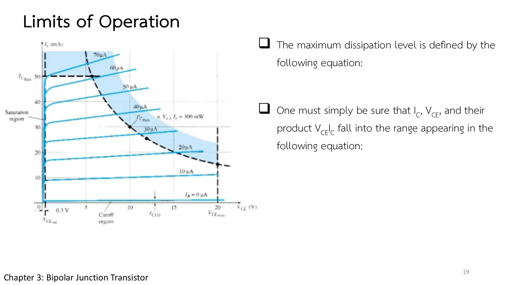

A circuit whose every number is right can still burn out its transistor if the operating point sits outside the limits the manufacturer sets: too much current, too much voltage, or too much power turned into heat. Every specification sheet lists those limits, and they can be drawn as a region on the characteristics. This page puts the operating point of a common-emitter circuit on the characteristics of Fig. 3.22 with every limit drawn (section A), sketches the maximum-power curve, finds the region of operation of the transistor of Fig. 3.13, and closes the chapter with the common-collector configuration, whose high input and low output impedance suit it to impedance matching (problems 1–3), followed by more practice (chapter 3 slides, pp. 17–19; Boylestad sections 3.6–3.8).
Common collector: the load is at the emitter and the collector is common (at ac ground). Its input impedance is high and its output impedance low, the opposite of common base and common emitter, so it is used for impedance matching (slide p. 17). It is designed with the common-emitter characteristics, since \(I_E \cong I_C\).
Limits read directly: the maximum collector current \(I_{C\max}\) and the maximum collector–emitter voltage \(BV_{CEO}\) (or \(V_{(BR)CEO}\)); for Fig. 3.22, 50 mA and 20 V (slide p. 18).
Saturation and cutoff: \(V_{CE}\) must not fall below \(V_{CE\text{sat}}\) (about 0.3 V) and \(I_C\) not below \(I_{CEO}\), for amplification with little distortion.
The maximum-power curve \(V_{CE}I_C = P_{C\max}\) is a hyperbola, sketched from three points: at \(I_{C\max}\), at \(V_{CE\max}\) and at \(\tfrac12 I_{C\max}\) (slide p. 19, Eq. 3.17).
With no characteristics at hand, check the three conditions of Eq. 3.18, which a transistor's specification sheet provides (slide p. 19).
ตอนที่ 1 · ทรานซิสเตอร์ก็มีขีดจำกัด
Part 1 · Every transistor has limits
ย่านทำงานบนลักษณะสมบัติ
The region of operation on the characteristics
สไลด์หน้า 18 ขีดย่านบนลักษณะสมบัติของรูป 3.22 ที่ทรานซิสเตอร์ทำงานได้ ขีดจำกัดทุกค่ามาจากข้อมูลจำเพาะ และบางค่าเข้าใจได้ทันที: กระแสคอลเล็กเตอร์สูงสุด \(I_{C\max}\) = 50 mA เป็นเส้นแนวนอนด้านบน และแรงดันคอลเล็กเตอร์–อิมิตเตอร์สูงสุด 20 V เป็นขอบด้านขวา
Slide p. 18 marks out a region on the characteristics of Fig. 3.22 where the transistor may work. Every limit comes from the specification sheet, and some explain themselves: the maximum collector current \(I_{C\max}\) = 50 mA is a horizontal line across the top, and the maximum collector-to-emitter voltage of 20 V is the right-hand edge.
The other three need a closer look. The dashed curve \(V_{CE}I_C\) = 300 mW is the limit on power turned into heat; on the left is \(V_{CE\text{sat}}\) = 0.3 V, below which lies saturation; and at the bottom is \(I_{CEO}\), below which lies cutoff. An operating point that amplifies with little distortion has to stay in what is left.
สไลด์บทที่ 3 หน้า 18: ย่านทำงานของรูป 3.22 · แตะรูปเพื่อขยายChapter 3 slide p. 18: the region of operation of Fig. 3.22 · tap to enlarge
The common-emitter circuit of page 3.3, but the transistor is the set of curves read off Fig. 3.22 (\(I_B\) = 0–70 µA, \(R_B\) = 100 kΩ). The side panel draws every limit: \(I_{C\max}\) = 50 mA, \(BV_{CEO}\) = 20 V, the dashed curve \(V_{CE}I_C\) = 300 mW, \(V_{CE\text{sat}}\) = 0.3 V and \(I_{CEO}\) about 1 mA; the faint red area lies beyond the ratings. Change \(V_{BB}\), \(V_{CC}\) and \(R_C\) and see when Q leaves the region (the upturn of the curves near 20 V is the breakdown region, as the book draws it).
Slide p. 19 defines the maximum collector dissipation as a product, \(P_{C\max} = V_{CE}I_C\). A constant product draws a hyperbola, not a straight line, and it can be sketched from three points: at \(I_{C\max}\), at \(V_{CE\max}\), and at half of \(I_{C\max}\).
The slide also states a rule that works even without the characteristics: check that \(I_C\), \(V_{CE}\) and their product all fall in the allowed ranges. Before opening the solution, find how high \(V_{CE}\) may go at 50 mA without passing 300 mW.

สไลด์หน้า 19: กำลังสูงสุดและย่านทำงาน (สมการหายไป) · แตะรูปเพื่อขยายSlide p. 19: the maximum power and the region (equations missing) · tap to enlarge
Slide p. 19 has no equations, only the sentences leading to \(P_{C\max} = V_{CE}I_C\) and the three conditions of the region of operation (Eqs. 3.17–3.18 of the book); this page writes them in the box above and in problem 1.
The transistor of Fig. 3.22 has a maximum collector dissipation \(P_{C\max}\) = 300 mW, \(I_{C\max}\) = 50 mA and \(BV_{CEO}\) = 20 V. Find the points of the maximum-power curve at \(I_C = I_{C\max}\), at \(V_{CE} = BV_{CEO}\) and at \(I_C = \tfrac12 I_{C\max}\), then write the linear region of operation.
The simulation puts the transistor of Fig. 3.22 at each point (fed the \(I_B\) that gives that \(I_C\), with \(V_{CE}\) set by a voltage source). Try it first.
2
ย่านทำงานของทรานซิสเตอร์ในรูป 3.13
The region of operation of the transistor of Fig. 3.13
Determine the region of operation for a transistor having the characteristics of Fig. 3.13 if \(I_{C\max}\) = 6 mA, \(BV_{CEO}\) = 15 V and \(P_{C\max}\) = 35 mW.
The last configuration shares the collector (slide p. 17): the load sits at the emitter, and the collector goes to the supply, which is ac ground. Its strengths are the opposite of common base and common emitter, a high input impedance and a low output impedance, so it is used for impedance matching: between a signal source that can supply little current and a load that needs a lot.
The emitter voltage follows the base voltage, which gives the circuit its other name, the emitter follower. Before opening the solution, guess whether its voltage gain is above 1, exactly 1, or a little below.
สไลด์หน้า 17: วงจรคอลเล็กเตอร์ร่วม · แตะรูปเพื่อขยายSlide p. 17: the common-collector configuration · tap to enlarge
An input voltage of 2 V rms (measured from base to ground) is applied to the common-collector circuit of Fig. 3.21. Assuming that the emitter voltage follows the base voltage and that \(V_{be}\) (rms) = 0.1 V, calculate the voltage amplification \(A_v = V_o/V_i\) and the emitter current for \(R_E\) = 1 kΩ.
The simulation is an npn common-collector stage: the collector on \(V_{CC}\) = 12 V (ac ground), the base driven by \(v_i\) = 4 V dc + 2 V rms, and \(R_E\) = 1 kΩ as the load at the emitter. Below, \(v_i\) and \(v_o\) against time (the dots run in slowed-down time). Try it first.
In section A set \(V_{CC}\) = 20 V and \(R_C\) = 330 Ω, then raise \(V_{BB}\): Q climbs the load line, and the power \(V_{CE}I_C\) peaks at the middle of the load line (\(V_{CE} = V_{CC}/2\)), beyond 300 mW.
Pick \(R_C\) = 470 Ω: the load line is less steep and its middle gives \(V_{CC}^2/4R_C\) = 213 mW; the whole load line stays under the power curve.
Set \(V_{CC}\) above 20 V and lower \(V_{BB}\): \(V_{CE}\) approaches \(V_{CC}\) and passes \(BV_{CEO}\), where the curves turn up (breakdown).
Try this 2 — the emitter follower
Problem 3: \(v_o\) has exactly the shape of \(v_i\), shifted down by the dc voltage across the junction and a little smaller.
If the base–emitter junction held exactly 0.7 V (the model of page 3.2), the ac voltage across it would be zero and \(A_v\) exactly 1; the 0.1 V rms of the problem is the ac voltage assumed across the junction.
![Chapter 3 slide 18, Limits of Operation: a region has been defined for the transistor characteristics of the figure; all of the limits of operation are defined on a typical transistor specification sheet. Some of the limits of operation are self-explanatory, such as maximum collector current and maximum collector-to-emitter voltage. For the transistor of the figure, I_Cmax was specified as 50 mA and V_CEO as 20 V. Figure 3.22: I_C 0 to 60 mA against V_CE 0 to 20 V for I_B = 0 to 70 µA, the dashed I_Cmax line at 50 mA, the dashed P_Cmax curve V_CE I_C = 300 mW with the shaded region beyond it, V_CEsat = 0.3 V, the cutoff region, I_CEO and V_CEmax.](slides/ch3/p18.webp)
![Chapter 3 slide 17, Common-Collector Configuration: the common-collector configuration is used primarily for impedance-matching purposes since it has a high input impedance and low output impedance, opposite to that of the common-base and common-emitter configurations. Figures: a pnp symbol with I_E out of the emitter at the top, I_B out of the base and I_C into the collector at the bottom, beside its p-n-p block with a large arrow down; and an npn symbol with the currents the other way, beside its n-p-n block with a large arrow up.](slides/ch3/p17.webp)